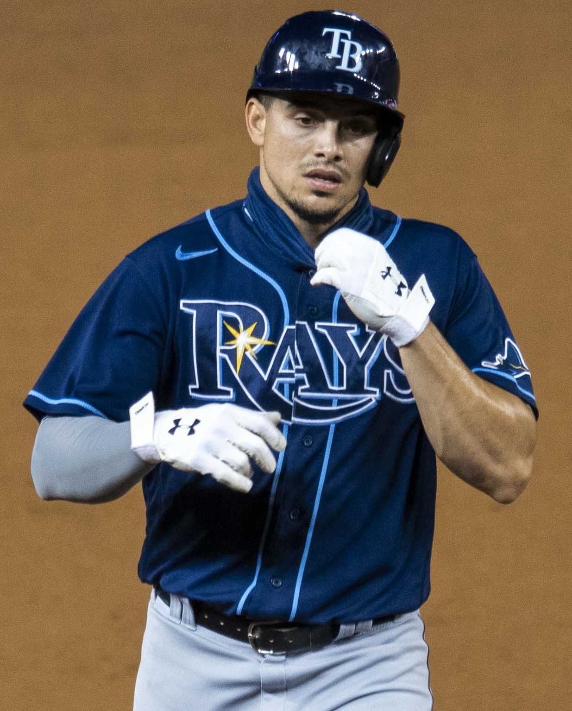

Giants October Watch
The Giants Might Actually Have Something in Carson Whisenhunt
Two starts, two wins for the rookie lefty. Schmitt, Eldridge and Adames all went deep in an 8-2 win over the Rockies. For once, a reason to watch.
Read the column →San Francisco Giants coverage, Oracle Park series notes, and lineup watch.

Two starts, two wins for the rookie lefty. Schmitt, Eldridge and Adames all went deep in an 8-2 win over the Rockies. For once, a reason to watch.
Read the column →
At 35-49 and 17 back, the year is done. The future is Eldridge, and Posey's no-leverage bullpen makes no sense.
Read the column →
Eight-plus hitless innings, a first-inning grand slam off Logan Webb, a 10-0 loss at home. This team is going nowhere.
Read the column →
Toronto had scored two runs in 27 innings. Trevor McDonald and the Giants handed them nine in a 9-3 loss.
Read more →
The Giants handed the manager job to a college coach with zero days of pro experience. Bold is not the same as smart.
Read the column →
San Francisco keeps building teams that are fine. Fine does not fill the ballpark in September.
Read more →Three World Series titles in five years, in 2010, 2012, and 2014.
Read more →
Lopez, Casilla, Romo, and Affeldt posted a 1.14 ERA across three title runs. Nobody managed a bullpen better.
Read more →
762 home runs, 73 in a single season, seven MVPs. The most feared hitter in baseball history wore orange and black.
Read more →The last great pennant race, Dusty Baker's final-day call on a 21-year-old rookie, and the 12-1 loss that ended it.
Read more →
The 2000 NL MVP, the best-hitting second baseman ever, and the man who feuded with Bonds and still made it work.
Read more →